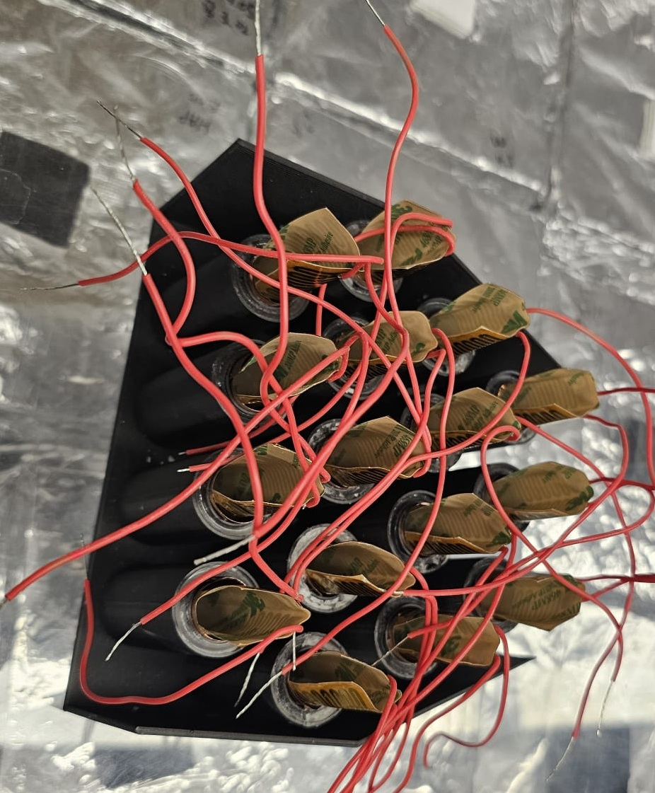
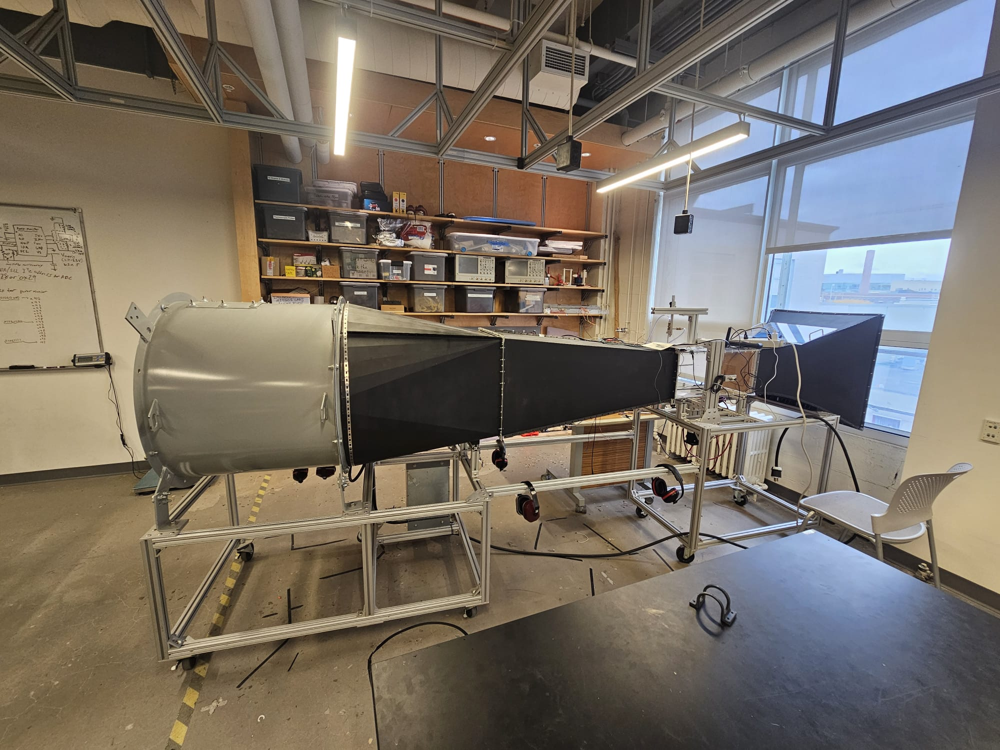
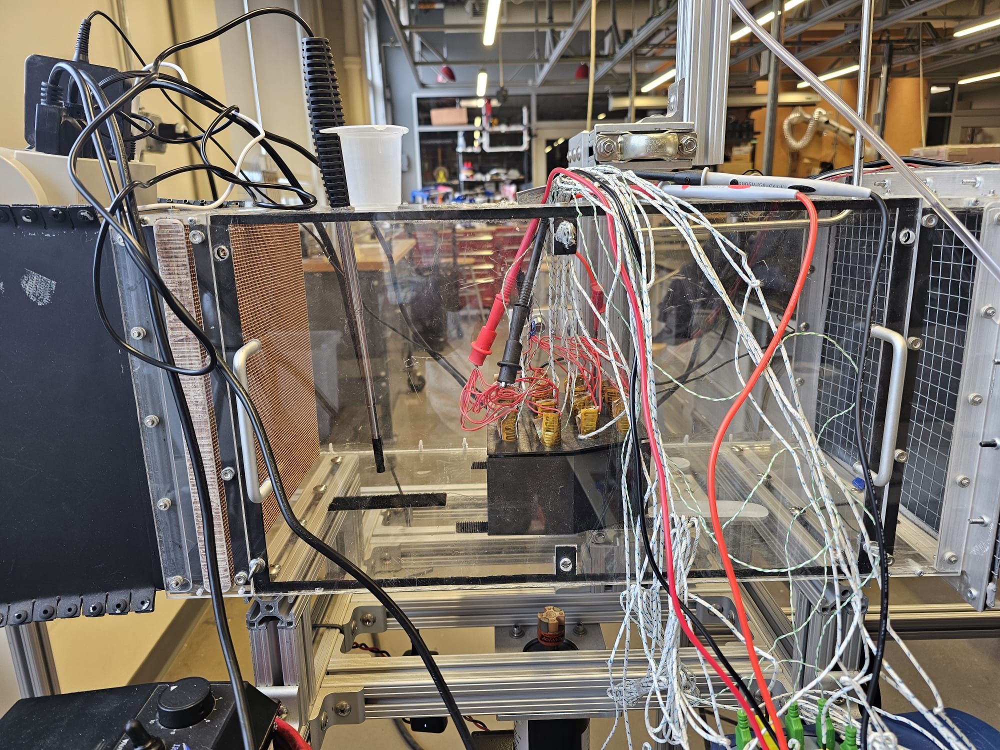
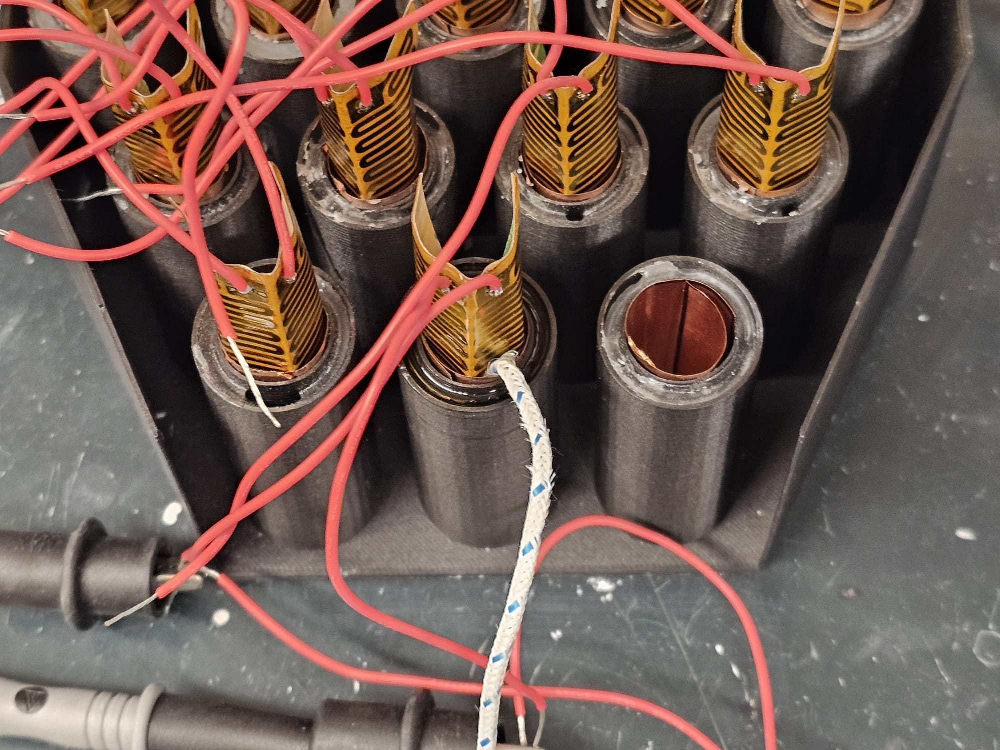
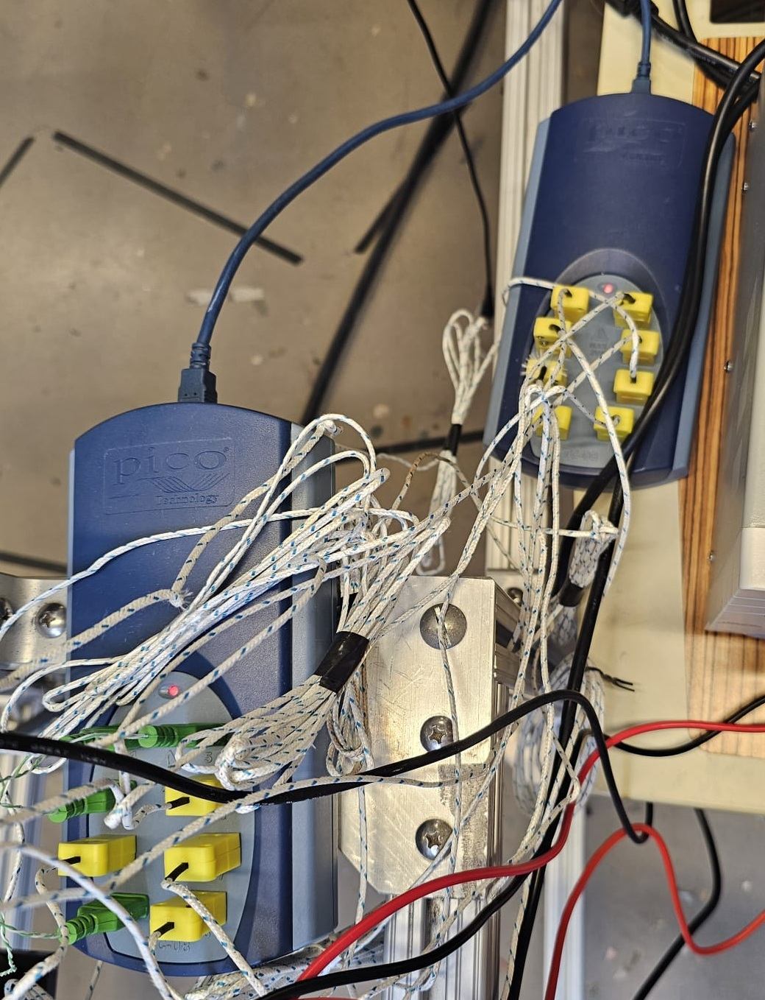
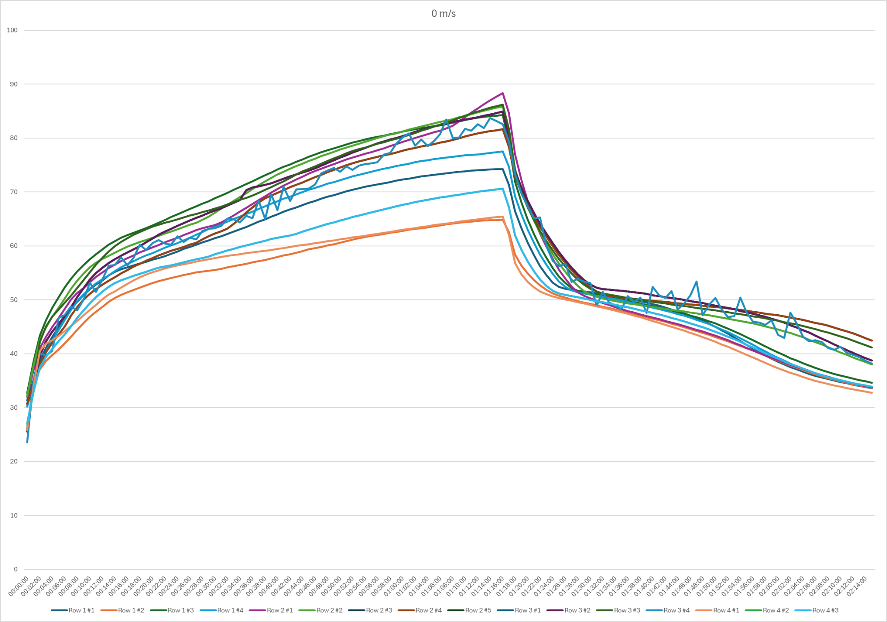
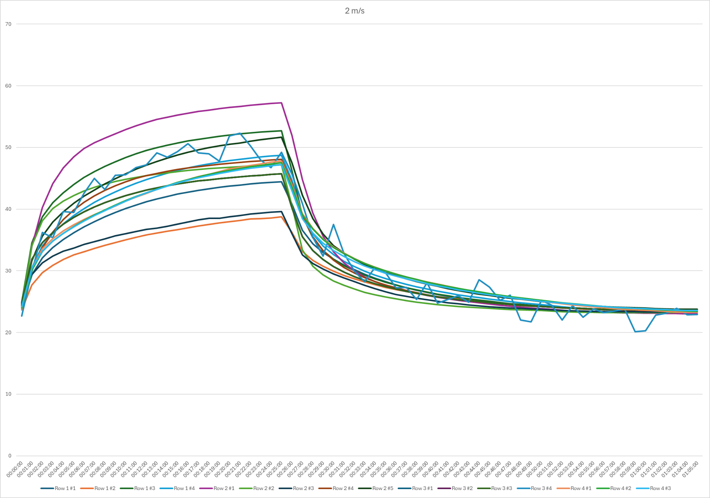
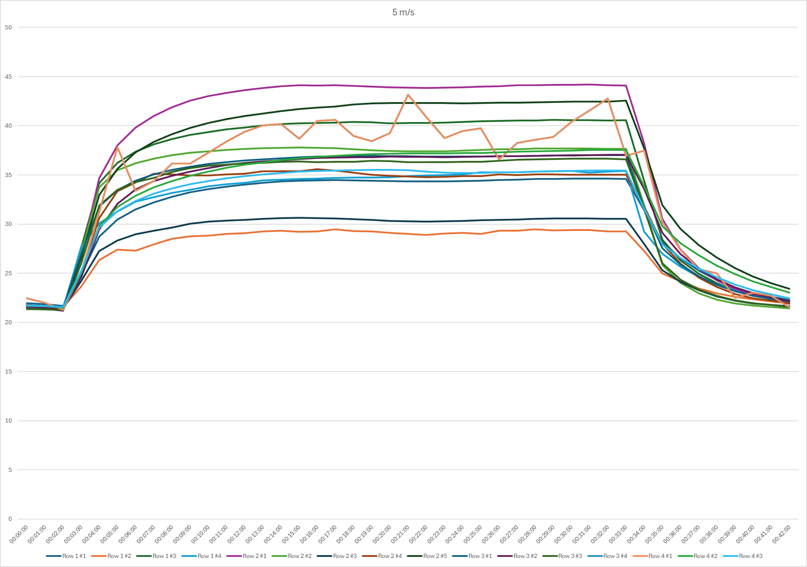
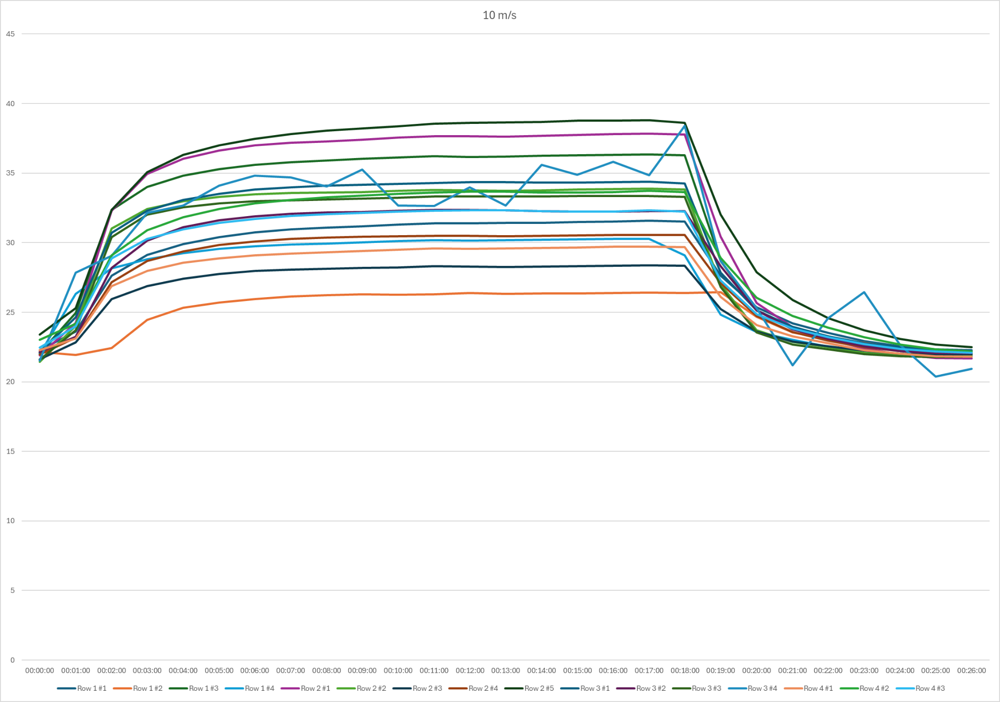

Hybrid active-passive cooling system combining forced air convection and paraffin wax PCM for a 16-cell lithium-ion battery pack. Experimental characterization across four wind speeds using a 3D-printed trapezoidal pack with full thermocouple instrumentation.








